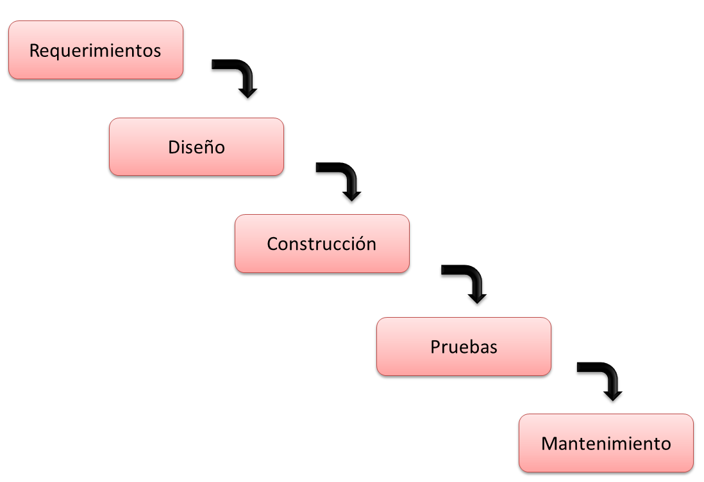

Modelo lineal o en cascada

Es un enfoque tradicional en el que cada fase se completa antes de pasar a la siguiente. Las etapas incluyen la planificación, análisis, diseño, desarrollo, pruebas, implementación y mantenimiento. Este modelo puede ser adecuado para proyectos pequeños y bien definidos, pero puede ser inflexible si se requieren cambios en etapas posteriores.
Fases de Modelo lineal
- Fase de Requisitos
- Fase de Diseño
- Fase de Desarrollo
- Fase de Pruebas
- Fase de Implementación
- Fase de Mantenimiento